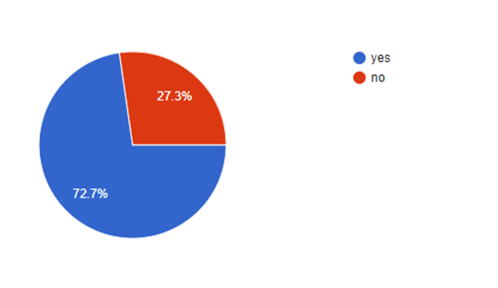

This is a documentation of a task that I did for the submission of problem statement that was launched by Flipkart when it came to my college for campus placement for the role of Associate Product Manager. This article describes the basic processes like user reseach, problem identification and design solution that I followed to complete the task.
My Task
Flipkart asked three questions and they were-
1. Tell about a problem of product that bothers you
2. How you can use technology to find the solution?
3. What would be the reason for the solution to fail?
So I started to think about a problem about a product which really bothers me. I remembered an instance where I got stuck while
using an application i.e Instagram. I was fairly new to instagram and its feature of instastories at that time. I uploaded my
first instagram story by tapping on the ‘+’ with the circle in the Stories section.

Before uploading the Story, After uploading the Story and after viewing the story
The problem arised when I had to upload to second insta story. I again tapped on the circle but it only allowed me to view my uploaded story one more time. I as a new user of the feature I used that button to add a story so automatically it created assumption in my mind that to add the story second time, repeating my first action i.e. tapping on it again would complete my purpose but it didn’t . Now the function of the tap has changed from ‘adding the story’ to ‘view the story’.
The correct way to upload the second story is to -
1. Use camera button on the top left corner of the screen
2. Long press the ‘story circle’
3. Right swiping on the home page.
As a first time user the second and the third method were not quite useful for me and the camera button on the top left corner was left unoticed due to major focus on the lower navigation system of the app. The camera icon also does not visually represent its relation to the instastory as i mistook it to be the option to upload pictures in the feed.
Need for User Research
On interaction with flipkart representatives at the time of workshop, they emphasised on a point that changed my approach towards problem solving. They told that the problem about a product which bothers the product manager should also bother a large group of people who are using that product. So there was a need to check that how many users are also bothered by the same problem which bothers me.
User Reseach
Due to less availability of time I conducted a small research among 52 students of my college. This implies that the target group lies around the age of 19-24 years of age and very well familiar with the advancements in digital technology.
From responses of hte question “how often do you use Instagram?” 80% users answered everyday.
I also reminded the users that they should not be looking at Instagram for this portion of the interview. I just asked them to visualize the interface while answering the questions. I asked them four simple questions
Do you use insta stories for uploading your moments ?
How often do you upload instagram stories?
Did you have any trouble in finding option to upload
second instastory for the first time?

Do you know how to upload a second instastory on the same day?
Conclusion
1. More than 45% of the users that use insta stories upload it once in 2-3 days.
2. 50 % of the users experienced the same problem which I experienced which is quiet a large number.
3. 30% of the users still dont know how to upload second insta story.
Design Solution
People hold their phones in many ways. Regardless of how they hold it, the top left corner of the screen will alway be the most inconvenient and painful location to place a navigation for users. Research suggests that the most accessible and least painful spot to place the navigations will be towards the bottom of the phone — right next to the user’s thumb.
So the access for story should also be present at the bottom.
By changing the design of the top left camera icon to an option through new users can easily relate it to the Insta story function can help to solve this problem.
Current
Suggested
User Testing
To see whether the proposed solution for the problem will work or not, user testing needs to be done.
Comparison/Preference Tests can be conducted to compare the workability of two designs i.e. current version and the proposed design alternative . These quick A/B tests at the design stage can quickly indicate which options work best, helping designers make decisions quickly and with substantial data backup. User data is captured via online surveys with users in the target demographic OR in-person, with an observation of the user analyzing the two designs. Comparison Tests are conducted after a hypothesis has been formed. Results are analyzed along with data gathered during user interviews, expert reviews, and analytics. The test is used to validate or invalidate the hypothesis.
Conclusion
From data we can see that
- Almost 50% of the users did not have a satisfying first experience (uploading second insta story) intially.
- But still around 80% people know how to use it which means that they tried other ways and suceeded eventually.
From this we can conclude that the users still continued to use the insta story feature because of the wide outreach of Instagram. If this problem would have been associated with a product with lesser outreach then it would have faced a significant amount of drops in the users for the insta story feature after the first experience.